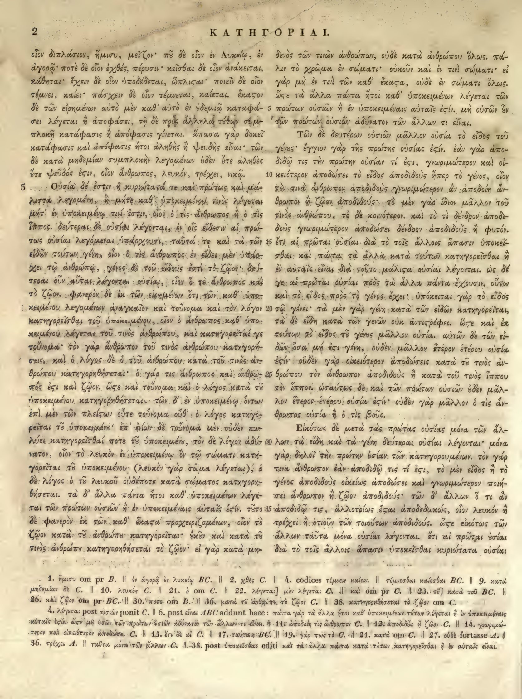

2a
| 1 | οἷον διπλάσιον, ἥμισυ, μεῖζον· <choice resp="#hathiTrustOCR"><sic>πῦ</sic><corr>ποῦ</corr></choice> δὲ οἷον ἐν Λυκείῳ, ἐν | 0.90 |
|---|---|---|
| 2 | ἀγορᾷ· ποτὲ δὲ οἷον <choice resp="#MinioPaluelloL1949"><sic>ἐχθές</sic><corr>χθές</corr></choice>, πέρυσιν· κεῖσθαι δὲ οἷον ἀνάκειται, | 0.90 |
| 3 | κάθηται· ἔχειν δὲ οἷον ὑποδέδεται, <choice resp="#hathiTrustOCR"><sic>ὥπλιςαι</sic><corr>ὥπλισται</corr></choice>· ποιεῖν δὲ οἷον | 0.90 |
| 4 | τέμνει, καίει· πάσχειν δὲ οἷον τέμνεται, καίεται. ἕκαστον | 0.90 |
| 5 | δὲ τῶν εἰρημένων αὐτὸ μὲν καθ’ αὑτὸ ἐν οὐδεμιᾷ καταφά- | 0.90 |
| 6 | σει λέγεται ἢ ἀποφάσει, τῇ δὲ πρὸς ἄλληλα τούτων συμ- | 0.90 |
| 7 | πλοκῇ κατάφασις ἢ ἀπόφασις γίνεται. ἅπασα γὰρ δοκεῖ | 0.90 |
| 8 | κατάφασις καὶ ἀπόφασις ἤτοι ἀληθὴς ἢ ψευδὴς εἶναι· τῶν | 0.90 |
| 9 | δὲ κατὰ μηδεμίαν συμπλοκὴν λεγομένων οὐδὲν οὔτε ἀληθὲς | 0.90 |
| 10 | οὔτε ψεῦδός <choice resp="#hathiTrustOCR"><sic>ἐςιν</sic><corr>ἐστιν</corr></choice>, οἷον ἄνθρωπος, λευκόν, τρέχει, νικᾷ. | 0.90 |
| Chapter 5 | ||
| 11 | Οὐσία δέ ἐστιν ἡ κυριώτατά τε καὶ πρώτως καὶ μά- | 0.90 |
| 12 | λιστα λεγομένη, ἣ μήτε καθ’ ὑποκειμένου τινὸς λέγεται | 0.90 |
| 13 | <choice resp="#MinioPaluelloL1949"><sic>μήτ</sic><corr>μήτε</corr></choice>’ ἐν ὑποκειμένῳ τινί ἐστιν, οἷον ὁ τὶς ἄνθρωπος ἢ ὁ τὶς | 0.90 |
| 14 | ἵππος. δεύτεραι δὲ οὐσίαι λέγονται, ἐν οἷς εἴδεσιν αἱ πρώ- | 0.90 |
| 15 | τως οὐσίαι λεγόμεναι <choice resp="#MinioPaluelloL1949"><sic>ὑπάρχουσι</sic><corr>ὑπάρχουσιν</corr></choice>, ταῦτά τε καὶ τὰ τῶν | 0.90 |
| 16 | εἰδῶν τούτων γένη, οἷον ὁ τὶς ἄνθρωπος ἐν εἴδει μὲν ὑπάρ- | 0.90 |
| 17 | χει τῷ ἀνθρώπῳ, γένος δὲ τοῦ εἴδους ἐστὶ τὸ ζῷον· δεύ- | 0.90 |
| 18 | τεραι οὖν αὗται λέγονται οὐσίαι, οἷον ὅ τε ἄνθρωπος καὶ | 0.90 |
| 19 | τὸ ζῷον. φανερὸν δὲ ἐκ τῶν εἰρημένων ὅτι τῶν καθ’ ὑπο- | 0.90 |
| 20 | κειμένου λεγομένων ἀναγκαῖον καὶ τοὔνομα καὶ τὸν λόγον | 0.90 |
| 21 | κατηγορεῖσθαι τοῦ ὑποκειμένου, οἷον ὁ ἄνθρωπος καθ’ ὑπο- | 0.90 |
| 22 | κειμένου λέγεται τοῦ τινὸς ἀνθρώπου, καὶ κατηγορεῖταί γε | 0.90 |
| 23 | τοὔνομα· τὸν γὰρ ἄνθρωπον τοῦ τινὸς ἀνθρώπου κατηγορή- | 0.90 |
| 24 | σεις, καὶ ὁ λόγος δὲ ὁ τοῦ ἀνθρώπου κατὰ τοῦ τινὸς ἀν- | 0.90 |
| 25 | θρώπου κατηγορηθήσεται· ὁ γάρ τις ἄνθρωπος καὶ ἄνθρω- | 0.90 |
| 26 | πός <choice resp="#hathiTrustOCR"><sic>ἐςι</sic><corr>ἐστι</corr></choice> καὶ ζῷον. <choice resp="#hathiTrustOCR"><sic>ὥςε</sic><corr>ὥστε</corr></choice> καὶ τοὔνομα καὶ ὁ λόγος κατὰ τοῦ | 0.90 |
| 27 | ὑποκειμένου κατηγορηθήσεται. τῶν δ’ ἐν ὑποκειμένῳ ὄντων | 0.90 |
| 28 | ἐπὶ μὲν τῶν πλείστων οὔτε τοὔνομα <choice resp="#MinioPaluelloL1949"><sic>οὐθ</sic><corr>οὔτε</corr></choice>’ ὁ λόγος κατηγο- | 0.90 |
| 29 | ρεῖται τοῦ ὑποκειμένου· ἐπ’ ἐνίων δὲ τοὔνομα μὲν οὐδὲν κω- | 0.90 |
| 30 | λύει κατηγορεῖσθαί ποτε τοῦ ὑποκειμένου, τὸν δὲ λόγον ἀδύ- | 0.90 |
| 31 | νατον, οἷον τὸ λευκὸν ἐν ὑποκειμένῳ ὂν τῷ σώματι κατη- | 0.90 |
| 32 | γορεῖται τοῦ ὑποκειμένου (λευκὸν γὰρ σῶμα λέγεται), ὁ | 0.90 |
| 33 | δὲ λόγος ὁ τοῦ λευκοῦ οὐδέποτε κατὰ σώματος κατηγορη- | 0.90 |
| 34 | θήσεται. τὰ δ’ ἄλλα πάντα ἤτοι καθ’ ὑποκειμένων λέγε- | 0.90 |
| 35 | ται τῶν πρώτων οὐσιῶν ἢ ἐν ὑποκειμέναις αὐταῖς <choice resp="#hathiTrustOCR"><sic>ἐςίν</sic><corr>ἐστίν</corr></choice>. τοῦτο | 0.90 |
| 36 | δὲ φανερὸν ἐκ τῶν καθ’ <choice resp="#hathiTrustOCR"><sic>ἕκαςα</sic><corr>ἕκαστα</corr></choice> προχειριζομένων, οἷον τὸ | 0.90 |
| 37 | ζῷον κατὰ τοῦ ἀνθρώπου κατηγορεῖται· οὐκοῦν καὶ κατὰ τοῦ | 0.90 |
| 38 | τινὸς ἀνθρώπου κατηγορηθήσεται τὸ ζῷον· εἰ γὰρ κατὰ μη- | 0.90 |
2b
| 1 | δενὸς τῶν τινῶν ἀνθρώπων, οὐδὲ κατὰ ἀνθρώπου ὅλως. πά- | 0.85 |
|---|---|---|
| 2 | λιν τὸ χρῶμα ἐν σώματι· οὐκοῦν καὶ ἐν τινὶ σώματι· εἰ | 0.90 |
| 3 | γὰρ μὴ ἐν τινὶ τῶν καθ’ ἕκαστα, οὐδὲ ἐν σώματι ὅλως. | 0.90 |
| 4 | ὥστε τὰ ἄλλα πάντα ἤτοι καθ’ ὑποκειμένων λέγεται τῶν | 0.90 |
| 5 | πρώτων οὐσιῶν ἢ ἐν ὑποκειμέναις αὐταῖς <choice resp="#MinioPaluelloL1949"><sic>ἐσίν</sic><corr>ἐστίν</corr></choice>. μὴ οὐσῶν ἐν | 0.85 |
| 6 | τῶν πρώτων οὐσιῶν ἀδύνατον τῶν ἄλλων τι εἶναι. | 0.90 |
| 7 | Τῶν δὲ δευτέρων οὐσιῶν μᾶλλον οὐσία τὸ εἶδος τοῦ | 0.90 |
| 8 | γένους· ἔγγιον γὰρ τῆς πρώτης οὐσίας <choice resp="#hathiTrustOCR"><sic>ἐσίν</sic><corr>ἐστίν</corr></choice>. ἐὰν γὰρ ἀπο- | 0.90 |
| 9 | διδῷ τις τὴν πρώτην οὐσίαν τί ἐστι, γνωριμώτερον καὶ οἰ- | 0.90 |
| 10 | κειότερον ἀποδώσει τὸ εἶδος ἀποδιδοὺς <choice resp="#MinioPaluelloL1949"><sic>ἤπερ</sic><corr>ἢ</corr></choice> τὸ γένος, οἷον | 0.90 |
| 11 | τὸν τινὰ ἄνθρωπον ἀποδιδοὺς γνωριμώτερον ἂν ἀποδοίη ἄν- | 0.90 |
| 12 | θρωπον ἢ ζῷον ἀποδιδούς· τὸ μὲν γὰρ ἴδιον μᾶλλον τοῦ | 0.90 |
| 13 | τινὸς ἀνθρώπου, τὸ δὲ κοινότερον. καὶ τὸ τὶ δένδρον ἀποδι- | 0.90 |
| 14 | δοὺς γνωριμώτερον ἀποδώσει δένδρον ἀποδιδοὺς ἢ φυτόν. | 0.90 |
| 15 | ἔτι αἱ πρῶται οὐσίαι διὰ τὸ τοῖς ἄλλοις ἅπασιν ὑποκεῖ- | 0.90 |
| 16 | σθαι. καὶ πάντα τὰ ἄλλα κατὰ τούτων κατηγορεῖσθαι ἢ | 0.90 |
| 17 | ἐν <choice resp="#MinioPaluelloL1949"><sic>αὐταῖς</sic><corr>ταύταις</corr></choice> εἶναι· διὰ τοῦτο μάλιστα οὐσίαι λέγονται. ὡς δέ | 0.90 |
| 18 | γε αἱ πρῶται οὐσίαι πρὸς τὰ ἄλλα πάντα ἔχουσιν, οὕτω | 0.90 |
| 19 | καὶ τὸ εἶδος πρὸς τὸ γένος ἔχει· ὑπόκειται γὰρ τὸ εἶδος | 0.90 |
| 20 | τῷ γένει· τὰ μὲν γὰρ γένη κατὰ τῶν εἰδῶν κατηγορεῖται, | 0.90 |
| 21 | τὰ δὲ εἴδη κατὰ τῶν γενῶν οὐκ ἀντιστρέφει. ὥστε καὶ ἐκ | 0.90 |
| 22 | τούτων τὸ εἶδος τοῦ γένους μᾶλλον οὐσία. αὐτῶν δὲ τῶν εἰ- | 0.90 |
| 23 | δῶν ὅσα μή ἐστι γένη, οὐδὲν μᾶλλον ἕτερον ἑτέρου οὐσία | 0.90 |
| 24 | <choice resp="#MinioPaluelloL1949"><sic>ἐσίν</sic><corr>ἐστίν</corr></choice>· οὐδὲν γὰρ οἰκειότερον <choice resp="#MinioPaluelloL1949"><sic>ἀποδώσεις</sic><corr>ἀποδώσει</corr></choice> κατὰ τοῦ τινὸς ἀν- | 0.90 |
| 25 | θρώπου τὸν ἄνθρωπον ἀποδιδοὺς ἢ κατὰ τοῦ τινὸς ἵππου | 0.90 |
| 26 | τὸν ἵππον. ὡσαύτως δὲ καὶ τῶν πρώτων οὐσιῶν οὐδὲν μᾶλ- | 0.90 |
| 27 | λον ἕτερον ἑτέρου οὐσία <choice resp="#hathiTrustOCR"><sic>ἐσίν</sic><corr>ἐστίν</corr></choice>· οὐδὲν γὰρ μᾶλλον ὁ τὶς ἄν- | 0.90 |
| 28 | θρωπος οὐσία ἢ ὁ τὶς βοῦς. | 0.90 |
| 29 | Εἰκότως δὲ μετὰ τὰς πρώτας οὐσίας μόνα τῶν ἄλ- | 0.90 |
| 30 | λων τὰ εἴδη καὶ τὰ γένη δεύτεραι οὐσίαι λέγονται· μόνα | 0.90 |
| 31 | γὰρ δηλοῖ τὴν πρώτην οὐσίαν τῶν κατηγορουμένων. τὸν γὰρ | 0.90 |
| 32 | τινὰ ἄνθρωπον ἐὰν ἀποδιδῷ τις τί <choice resp="#hathiTrustOCR"><sic>ἐςι</sic><corr>ἐστι</corr></choice>, τὸ μὲν εἶδος ἢ τὸ | 0.90 |
| 33 | γένος ἀποδιδοὺς οἰκείως ἀποδώσει καὶ γνωριμώτερον ποιή- | 0.90 |
| 34 | σει ἄνθρωπον ἢ ζῷον ἀποδιδούς· τῶν δ’ ἄλλων ὅ τι ἂν | 0.90 |
| 35 | ἀποδιδῷ τις, ἀλλοτρίως <choice resp="#hathiTrustOCR"><sic>ἔςαι</sic><corr>ἔσται</corr></choice> ἀποδεδωκώς, οἷον λευκὸν ἢ | 0.90 |
| 36 | τρέχει ἢ ὁτιοῦν τῶν τοιούτων ἀποδιδούς. <choice resp="#hathiTrustOCR"><sic>ὥςε</sic><corr>ὥστε</corr></choice> εἰκότως τῶν | 0.90 |
| 37 | ἄλλων ταῦτα μόνα οὐσίαι λέγονται. ἔτι αἱ πρῶται οὐσίαι | 0.90 |
| 38 | διὰ τὸ τοῖς ἄλλοις ἅπασιν ὑποκεῖσθαι κυριώτατα οὐσίαι | 0.90 |
Textual apparatus
- n1 [both] 1. ἥμισυ om pr B. || ἐν ἀγορᾷ ἐν λυκείῳ BC. || 2. χθές C. || 4. codices τέμνειν καίειν. || τέμνεσθαι καίεσθαι BC. || 9. κατὰ μηδεμίαν δὲ C. || 10. λευκός C. || 21. ὁ om C. || 22. λέγεται] μὲν λέγεται C. || καὶ om pr C. || 23. τῷ] κατὰ τοῦ BC. || 26. καὶ ζῷον om pr BC. || 30. ποτε om B. || 36. κατὰ τὸ ἐνθρώπω, τὸ ζῷον C. || 38. κατηγορηθήσεται τὸ ζῷον om C.
- n2 [both] 4. λέγεται post οὐσιῶν ponit C. || 6. post εἶναι ABC addunt haec: πάντα γὰρ τὰ ἄλλα ἤτοι καθ' ὑποκειμένων τινῶν λέγεται ἢ ἐν ὑποκειμέναις αὐταῖς ἐστίν· ἀστε μὴ οὐσῶν τῶν πρώτων οὐσιῶν ἀδύνατον τῶν ἄλλων τι εἶναι. || 11. ἀποδοίη τις ἀνθρώπω C. || 12. ἀποδώσεις ἢ ζῷον C. || 14. γραμμικώτερον καὶ οἰκειότερον ἀποδώσει C. || 15. ἔτι δὲ αἱ C. || 17. ταύταις BC. || 19. γὰρ πως τὸ C. || 21. κατὰ om C. || 27. οὐδὲ fortasse A. || 36. τρέχει A. || ταῦτα μόνα τῶν μάλων C. || 38. post ὑποκεῖσθαι editi καὶ τὰ ἄλλα πάντα κατὰ τῶν κατηγορεῖσθαι ἢ ἐν αὐταῖς εἶναι.
Verifier issues
- error column_b line 5: The στ ligature was misread as a single sigma with final sigma: 'ἐσίν' instead of the scan's 'ἐστίν'. A final sigma inside a word is impossible and signals a missed tau.
- error column_b line 8: The στ ligature was misread as a single sigma with final sigma: 'ἐσίν' instead of the scan's 'ἐστίν'. A final sigma inside a word is impossible and signals a missed tau.
- error column_b line 24: The στ ligature was misread as a single sigma with final sigma: 'ἐσίν' instead of the scan's 'ἐστίν'. A final sigma inside a word is impossible and signals a missed tau.
- error column_b line 27: The στ ligature was misread as a single sigma with final sigma: 'ἐσίν' instead of the scan's 'ἐστίν'. A final sigma inside a word is impossible and signals a missed tau.
All Greek-word differences from Minio–Paluello, L. 1949 (40)
This inventory is exhaustive at the Greek-word level; it does not imply that either reading is an error.
- replace 2a1: πῦ ↔ ποὺ (anchors: μεῖζον … δὲ)
- replace 2a2: ἐχθές ↔ χθές (anchors: οἷον … πέρυσιν)
- replace 2a4: τέμνει καίει ↔ τέμνειν καίειν (anchors: οἷον … πάσχειν)
- replace 2a4: τέμνεται καίεται ↔ τέμνεσθαι καίεσθαι (anchors: οἷον … ἕκαστον)
- delete 2a6: ἢ ἀποφάσει ↔ ∅ (anchors: λέγεται … τῇ)
- replace 2a7: ἢ ἀπόφασις γίνεται ↔ γίγνεται (anchors: κατάφασις … ἅπασα)
- delete 2a8: καὶ ἀπόφασις ↔ ∅ (anchors: κατάφασις … ἤτοι)
- replace 2a13: μήτ ↔ μήτε (anchors: λέγεται … ἐν)
- replace 2a15: ὑπάρχουσι ↔ ὑπάρχουσιν (anchors: λεγόμεναι … ταῦτά)
- delete 2a21: ὁ ↔ ∅ (anchors: οἷον … ἄνθρωπος)
- insert 2a23: ∅ ↔ κατὰ (anchors: ἄνθρωπον … τοῦ)
- delete 2a24: ὁ ↔ ∅ (anchors: δὲ … τοῦ)
- orthographic_or_diacritic 2a25: γάρ ↔ γὰρ (anchors: ὁ … τις)
- orthographic_or_diacritic 2a25: τις ↔ τὶς (anchors: γάρ … ἄνθρωπος)
- replace 2a26: ἐστι καὶ ζῷον ↔ ἐστιν (anchors: ἄνθρωπός … ὥστε)
- replace 2a28: οὐθ ↔ οὔτε (anchors: τοὔνομα … ὁ)
- orthographic_or_diacritic 2a30: κατηγορεῖσθαί ↔ κατηγορεῖσθαι (anchors: κωλύει … ποτε)
- delete 2a30: ποτε ↔ ∅ (anchors: κατηγορεῖσθαί … τοῦ)
- delete 2a33: ὁ ↔ ∅ (anchors: λόγος … τοῦ)
- insert 2a33: ∅ ↔ τοῦ (anchors: κατὰ … σώματος)
- delete 2a38: κατηγορηθήσεται τὸ ζῷον ↔ ∅ (anchors: ἀνθρώπου … εἰ)
- replace 2a38: μη δενὸς ↔ μηδενὸς (anchors: κατὰ … τῶν)
- delete 2b4: λέγεται ↔ ∅ (anchors: ὑποκειμένων … τῶν)
- insert 2b5: ∅ ↔ λέγεται (anchors: οὐσιῶν … ἢ)
- replace 2b5: ἐσίν ↔ ἐστίν (anchors: αὐταῖς … μὴ)
- insert 2b5: ∅ ↔ οὖν τῶν πρώτων οὐσιῶν ἀδύνατον τῶν ἄλλων τι εἶναι πάντα γὰρ τὰ ἄλλα ἤτοι καθ ὑποκειμένων τούτων λέγεται ἢ (anchors: οὐσῶν … ἐν)
- insert 2b5: ∅ ↔ ὑποκειμέναις αὐταῖς ἐστίν ὥστε μὴ οὐσῶν (anchors: ἐν … τῶν)
- replace 2b8: ἐσίν ↔ ἐστίν (anchors: οὐσίας … ἐὰν)
- replace 2b10: ἤπερ ↔ ἢ (anchors: ἀποδιδοὺς … τὸ)
- delete 2b11: ἀποδιδοὺς ↔ ∅ (anchors: ἄνθρωπον … γνωριμώτερον)
- insert 2b11: ∅ ↔ ἀποδιδοὺς (anchors: ἄνθρωπον … ἢ)
- delete 2b12: ἀποδιδούς ↔ ∅ (anchors: ζῷον … τὸ)
- replace 2b17: αὐταῖς ↔ ταύταις (anchors: ἐν … εἶναι)
- delete 2b18: πάντα ↔ ∅ (anchors: ἄλλα … ἔχουσιν)
- replace 2b24: ἐσίν ↔ ἐστίν (anchors: οὐσία … οὐδὲν)
- replace 2b24: ἀποδώσεις ↔ ἀποδώσει (anchors: οἰκειότερον … κατὰ)
- replace 2b27: ἐσίν ↔ ἐστίν (anchors: οὐσία … οὐδὲν)
- replace 2b32: ἐστι ↔ ἐστιν (anchors: τί … τὸ)
- insert 2b36: ∅ ↔ ταῦτα μόνα (anchors: εἰκότως … τῶν)
- delete 2b37: ταῦτα μόνα ↔ ∅ (anchors: ἄλλων … οὐσίαι)
Encoded TEI choices (21)
- b8
#hathiTrustOCR: <choice resp="#hathiTrustOCR"><sic>ἐσίν</sic><corr>ἐστίν</corr></choice> (0.95) — The extraction reads 'ἐσίν' but the scan visibly shows the compact στ ligature, matching the reference forms of ἐστίν. The Hathi OCR also reads 'ἐστίν'. - b27
#hathiTrustOCR: <choice resp="#hathiTrustOCR"><sic>ἐσίν</sic><corr>ἐστίν</corr></choice> (0.95) — The extraction reads 'ἐσίν' but the scan visibly shows the compact στ ligature, matching the reference forms of ἐστίν. The Hathi OCR shows 'ἐσίν' but the scan confirms στ. - a3
#hathiTrustOCR: <choice resp="#hathiTrustOCR"><sic>ὥπλιςαι</sic><corr>ὥπλισται</corr></choice> (1.00) — Aligned Hathi στ-ligature OCR correction: deterministic repair of the Hathi internal final sigma agrees with the scan and reference crop. - a10
#hathiTrustOCR: <choice resp="#hathiTrustOCR"><sic>ἐςιν</sic><corr>ἐστιν</corr></choice> (1.00) — Aligned Hathi στ-ligature OCR correction: deterministic repair of the Hathi internal final sigma agrees with the scan and reference crop. - a26
#hathiTrustOCR: <choice resp="#hathiTrustOCR"><sic>ἐςι</sic><corr>ἐστι</corr></choice> (1.00) — Aligned Hathi στ-ligature OCR correction: deterministic repair of the Hathi internal final sigma agrees with the scan and reference crop. - a26
#hathiTrustOCR: <choice resp="#hathiTrustOCR"><sic>ὥςε</sic><corr>ὥστε</corr></choice> (1.00) — Aligned Hathi στ-ligature OCR correction: deterministic repair of the Hathi internal final sigma agrees with the scan and reference crop. - a35
#hathiTrustOCR: <choice resp="#hathiTrustOCR"><sic>ἐςίν</sic><corr>ἐστίν</corr></choice> (1.00) — Aligned Hathi στ-ligature OCR correction: deterministic repair of the Hathi internal final sigma agrees with the scan and reference crop. - a36
#hathiTrustOCR: <choice resp="#hathiTrustOCR"><sic>ἕκαςα</sic><corr>ἕκαστα</corr></choice> (1.00) — Aligned Hathi στ-ligature OCR correction: deterministic repair of the Hathi internal final sigma agrees with the scan and reference crop. - b32
#hathiTrustOCR: <choice resp="#hathiTrustOCR"><sic>ἐςι</sic><corr>ἐστι</corr></choice> (1.00) — Aligned Hathi στ-ligature OCR correction: deterministic repair of the Hathi internal final sigma agrees with the scan and reference crop. - b35
#hathiTrustOCR: <choice resp="#hathiTrustOCR"><sic>ἔςαι</sic><corr>ἔσται</corr></choice> (1.00) — Aligned Hathi στ-ligature OCR correction: deterministic repair of the Hathi internal final sigma agrees with the scan and reference crop. - b36
#hathiTrustOCR: <choice resp="#hathiTrustOCR"><sic>ὥςε</sic><corr>ὥστε</corr></choice> (1.00) — Aligned Hathi στ-ligature OCR correction: deterministic repair of the Hathi internal final sigma agrees with the scan and reference crop. - a1
#hathiTrustOCR: <choice resp="#hathiTrustOCR"><sic>πῦ</sic><corr>ποῦ</corr></choice> (1.00) — Scan-confirmed Bekker ου-ligature correction: the compact final ου was transcribed as omega; the visible type and Greek morphology require -ου. - a2
#MinioPaluelloL1949: <choice resp="#MinioPaluelloL1949"><sic>ἐχθές</sic><corr>χθές</corr></choice> (0.90) — Plausible one-token difference in the globally aligned Minio–Paluello, L. 1949; surrounding token sequence is stable. - a13
#MinioPaluelloL1949: <choice resp="#MinioPaluelloL1949"><sic>μήτ</sic><corr>μήτε</corr></choice> (0.90) — Plausible one-token difference in the globally aligned Minio–Paluello, L. 1949; surrounding token sequence is stable. - a15
#MinioPaluelloL1949: <choice resp="#MinioPaluelloL1949"><sic>ὑπάρχουσι</sic><corr>ὑπάρχουσιν</corr></choice> (0.90) — Plausible one-token difference in the globally aligned Minio–Paluello, L. 1949; surrounding token sequence is stable. - a28
#MinioPaluelloL1949: <choice resp="#MinioPaluelloL1949"><sic>οὐθ</sic><corr>οὔτε</corr></choice> (0.90) — Plausible one-token difference in the globally aligned Minio–Paluello, L. 1949; surrounding token sequence is stable. - b5
#MinioPaluelloL1949: <choice resp="#MinioPaluelloL1949"><sic>ἐσίν</sic><corr>ἐστίν</corr></choice> (0.90) — Plausible one-token difference in the globally aligned Minio–Paluello, L. 1949; surrounding token sequence is stable. - b10
#MinioPaluelloL1949: <choice resp="#MinioPaluelloL1949"><sic>ἤπερ</sic><corr>ἢ</corr></choice> (0.90) — Plausible one-token difference in the globally aligned Minio–Paluello, L. 1949; surrounding token sequence is stable. - b17
#MinioPaluelloL1949: <choice resp="#MinioPaluelloL1949"><sic>αὐταῖς</sic><corr>ταύταις</corr></choice> (0.90) — Plausible one-token difference in the globally aligned Minio–Paluello, L. 1949; surrounding token sequence is stable. - b24
#MinioPaluelloL1949: <choice resp="#MinioPaluelloL1949"><sic>ἐσίν</sic><corr>ἐστίν</corr></choice> (0.90) — Plausible one-token difference in the globally aligned Minio–Paluello, L. 1949; surrounding token sequence is stable. - b24
#MinioPaluelloL1949: <choice resp="#MinioPaluelloL1949"><sic>ἀποδώσεις</sic><corr>ἀποδώσει</corr></choice> (0.90) — Plausible one-token difference in the globally aligned Minio–Paluello, L. 1949; surrounding token sequence is stable.
Unmatched Hathi OCR words (75)
Compared after στ/ου normalization and scan-attested line-end dehyphenation. OCR line numbers refer to the Hathi text file.
| Normalized | Raw OCR | OCR line | Context |
|---|---|---|---|
| κατηγορια | κατηγορια | 2 | 2 ⏎ ΚΑΤΗΓΟΡΙΑ Ι. ⏎ ལ |
| ι | ι | 2 | 2 ⏎ ΚΑΤΗΓΟΡΙΑ Ι. ⏎ ལ |
| εν | εν | 4 | ལ ⏎ εν ⏎ δενὸς τῶν τινῶν ἀνθρώπων, οὐδὲ κατὰ ἀνθρώπου ὅλως. πά- |
| καθ᾽ | καθ᾽ | 7 | λιν τὸ χρῶμα ἐν σώματι· οὐκοῦν καὶ ἐν τινὶ σώματι· εἰ ⏎ γὰρ μὴ ἐν τινὶ τῶν καθ᾽ ἔκαςα, οὐδὲ ἐν σώματι ὅλως. ⏎ ὥςε τὰ ἄλλα πάντα ἤτοι καθ᾽ ὑποκειμένων λέγεται τῶν |
| ἔκαστα | ἔκαςα | 7 | λιν τὸ χρῶμα ἐν σώματι· οὐκοῦν καὶ ἐν τινὶ σώματι· εἰ ⏎ γὰρ μὴ ἐν τινὶ τῶν καθ᾽ ἔκαςα, οὐδὲ ἐν σώματι ὅλως. ⏎ ὥςε τὰ ἄλλα πάντα ἤτοι καθ᾽ ὑποκειμένων λέγεται τῶν |
| καθ᾽ | καθ᾽ | 8 | γὰρ μὴ ἐν τινὶ τῶν καθ᾽ ἔκαςα, οὐδὲ ἐν σώματι ὅλως. ⏎ ὥςε τὰ ἄλλα πάντα ἤτοι καθ᾽ ὑποκειμένων λέγεται τῶν ⏎ πρώτων οὐσιῶν ἢ ἐν ὑποκειμέναις αὐταῖς ἐςίν. μὴ οὐσῶν ἦν |
| ἦν | ἦν | 9 | ὥςε τὰ ἄλλα πάντα ἤτοι καθ᾽ ὑποκειμένων λέγεται τῶν ⏎ πρώτων οὐσιῶν ἢ ἐν ὑποκειμέναις αὐταῖς ἐςίν. μὴ οὐσῶν ἦν ⏎ τῶν πρώτων οὐσιῶν ἀδύνατον τῶν ἄλλων τι εἶναι. |
| α | α | 11 | τῶν πρώτων οὐσιῶν ἀδύνατον τῶν ἄλλων τι εἶναι. ⏎ Α ⏎ Α |
| α | α | 12 | Α ⏎ Α ⏎ οἷον διπλάσιον, ἥμισυ, μείζον· πῇ δὲ οἷον ἐν Λυκείῳ, ἐν |
| μείζον | μείζον | 13 | Α ⏎ οἷον διπλάσιον, ἥμισυ, μείζον· πῇ δὲ οἷον ἐν Λυκείῳ, ἐν ⏎ ἀγορᾷ· ποτὲ δὲ οἷον ἐχθές, πέρυσιν· κεῖσθαι δὲ οἷον ἀνάκειται, |
| πῇ | πῇ | 13 | Α ⏎ οἷον διπλάσιον, ἥμισυ, μείζον· πῇ δὲ οἷον ἐν Λυκείῳ, ἐν ⏎ ἀγορᾷ· ποτὲ δὲ οἷον ἐχθές, πέρυσιν· κεῖσθαι δὲ οἷον ἀνάκειται, |
| έκαστον | έκαςον | 16 | κάθηται· ἔχειν δὲ οἷον ὑποδέδεται, ὥπλιςαι· ποιεῖν δὲ οἷον ⏎ τέμνει, καίει· πάσχειν δὲ οἷον τέμνεται, καίεται. έκαςον ⏎ δὲ τῶν εἰρημένων αὐτὸ μὲν καθ᾽ αὑτὸ ἐν ἐδεμιᾷ καταφά- 5 |
| καθ᾽ | καθ᾽ | 17 | τέμνει, καίει· πάσχειν δὲ οἷον τέμνεται, καίεται. έκαςον ⏎ δὲ τῶν εἰρημένων αὐτὸ μὲν καθ᾽ αὑτὸ ἐν ἐδεμιᾷ καταφά- 5 ⏎ σει λέγεται ἢ ἀποφάσει, τῇ δὲ πρὸς ἄλληλα τότων σύμ. |
| σύμ | σύμ | 18 | δὲ τῶν εἰρημένων αὐτὸ μὲν καθ᾽ αὑτὸ ἐν ἐδεμιᾷ καταφά- 5 ⏎ σει λέγεται ἢ ἀποφάσει, τῇ δὲ πρὸς ἄλληλα τότων σύμ. ⏎ πλοκῇ κατάφασις ἢ ἀπόφασις γίνεται. ἅπασα γὰρ δοκεῖ |
| πλοκῇ | πλοκῇ | 19 | σει λέγεται ἢ ἀποφάσει, τῇ δὲ πρὸς ἄλληλα τότων σύμ. ⏎ πλοκῇ κατάφασις ἢ ἀπόφασις γίνεται. ἅπασα γὰρ δοκεῖ ⏎ ή |
| ή | ή | 20 | πλοκῇ κατάφασις ἢ ἀπόφασις γίνεται. ἅπασα γὰρ δοκεῖ ⏎ ή ⏎ Τῶν δὲ δευτέρων οὐσιῶν μᾶλλον οὐσία τὸ εἶδος τοῦ |
| ψευδός | ψευδός | 24 | δὲ κατὰ μηδεμίαν συμπλοκὴν λεγομένων ἰδὲν ἔτε ἀληθὲς διδῷ τις τὴν πρώτην οὐσίαν τί ἐςι, γνωριμώτερον καὶ οἰ- ⏎ ἔτε ψευδός ἐςιν, οἷον ἄνθρωπος, λευκόν, τρέχει, νικᾷ. 10 κειότερον ἀποδώσει τὸ εἶδος ἀποδιδοὺς ἤπερ τὸ γένος, οἷον ⏎ 5 Οὐσία δέ ἐστιν ἡ κυριώτατά τε καὶ πρώτως καὶ ματ τὸν τινὰ ἄνθρωπον ἀποδιδοὺς γνωριμώτερον ἂν ἀποδοίη ἄν |
| ματ | ματ | 25 | ἔτε ψευδός ἐςιν, οἷον ἄνθρωπος, λευκόν, τρέχει, νικᾷ. 10 κειότερον ἀποδώσει τὸ εἶδος ἀποδιδοὺς ἤπερ τὸ γένος, οἷον ⏎ 5 Οὐσία δέ ἐστιν ἡ κυριώτατά τε καὶ πρώτως καὶ ματ τὸν τινὰ ἄνθρωπον ἀποδιδοὺς γνωριμώτερον ἂν ἀποδοίη ἄν ⏎ λιστα λεγομένη, ἡ μήτε καθ᾽ ὑποκειμένου τινὸς λέγεται θρωπον ἢ ζῷον ἀποδιδούς· τὸ μὲν γὰρ ἴδιον μᾶλλον τοῦ |
| ἄν | ἄν | 25 | ἔτε ψευδός ἐςιν, οἷον ἄνθρωπος, λευκόν, τρέχει, νικᾷ. 10 κειότερον ἀποδώσει τὸ εἶδος ἀποδιδοὺς ἤπερ τὸ γένος, οἷον ⏎ 5 Οὐσία δέ ἐστιν ἡ κυριώτατά τε καὶ πρώτως καὶ ματ τὸν τινὰ ἄνθρωπον ἀποδιδοὺς γνωριμώτερον ἂν ἀποδοίη ἄν ⏎ λιστα λεγομένη, ἡ μήτε καθ᾽ ὑποκειμένου τινὸς λέγεται θρωπον ἢ ζῷον ἀποδιδούς· τὸ μὲν γὰρ ἴδιον μᾶλλον τοῦ |
| λιστα | λιστα | 26 | 5 Οὐσία δέ ἐστιν ἡ κυριώτατά τε καὶ πρώτως καὶ ματ τὸν τινὰ ἄνθρωπον ἀποδιδοὺς γνωριμώτερον ἂν ἀποδοίη ἄν ⏎ λιστα λεγομένη, ἡ μήτε καθ᾽ ὑποκειμένου τινὸς λέγεται θρωπον ἢ ζῷον ἀποδιδούς· τὸ μὲν γὰρ ἴδιον μᾶλλον τοῦ ⏎ μήτ' ἐν ὑποκειμένῳ τινί ἐστιν, οἷον ὁ τὶς ἄνθρωπος ἢ ὁ τὶς τινὸς ἀνθρώπου, τὸ δὲ κοινότερον. καὶ τὸ τὶ δένδρον ἀποδι |
| καθ᾽ | καθ᾽ | 26 | 5 Οὐσία δέ ἐστιν ἡ κυριώτατά τε καὶ πρώτως καὶ ματ τὸν τινὰ ἄνθρωπον ἀποδιδοὺς γνωριμώτερον ἂν ἀποδοίη ἄν ⏎ λιστα λεγομένη, ἡ μήτε καθ᾽ ὑποκειμένου τινὸς λέγεται θρωπον ἢ ζῷον ἀποδιδούς· τὸ μὲν γὰρ ἴδιον μᾶλλον τοῦ ⏎ μήτ' ἐν ὑποκειμένῳ τινί ἐστιν, οἷον ὁ τὶς ἄνθρωπος ἢ ὁ τὶς τινὸς ἀνθρώπου, τὸ δὲ κοινότερον. καὶ τὸ τὶ δένδρον ἀποδι |
| θρωπον | θρωπον | 26 | 5 Οὐσία δέ ἐστιν ἡ κυριώτατά τε καὶ πρώτως καὶ ματ τὸν τινὰ ἄνθρωπον ἀποδιδοὺς γνωριμώτερον ἂν ἀποδοίη ἄν ⏎ λιστα λεγομένη, ἡ μήτε καθ᾽ ὑποκειμένου τινὸς λέγεται θρωπον ἢ ζῷον ἀποδιδούς· τὸ μὲν γὰρ ἴδιον μᾶλλον τοῦ ⏎ μήτ' ἐν ὑποκειμένῳ τινί ἐστιν, οἷον ὁ τὶς ἄνθρωπος ἢ ὁ τὶς τινὸς ἀνθρώπου, τὸ δὲ κοινότερον. καὶ τὸ τὶ δένδρον ἀποδι |
| ἀποδι | ἀποδι | 27 | λιστα λεγομένη, ἡ μήτε καθ᾽ ὑποκειμένου τινὸς λέγεται θρωπον ἢ ζῷον ἀποδιδούς· τὸ μὲν γὰρ ἴδιον μᾶλλον τοῦ ⏎ μήτ' ἐν ὑποκειμένῳ τινί ἐστιν, οἷον ὁ τὶς ἄνθρωπος ἢ ὁ τὶς τινὸς ἀνθρώπου, τὸ δὲ κοινότερον. καὶ τὸ τὶ δένδρον ἀποδι ⏎ ἵππος, δεύτεραι δὲ οὐσίαι λέγονται, ἐν οἷς εἴδεσιν αἱ πρώ- δοὺς γνωριμώτερον ἀποδώσει δένδρον ἀποδιδοὺς ἢ φυτόν. |
| δοὺς | δοὺς | 28 | μήτ' ἐν ὑποκειμένῳ τινί ἐστιν, οἷον ὁ τὶς ἄνθρωπος ἢ ὁ τὶς τινὸς ἀνθρώπου, τὸ δὲ κοινότερον. καὶ τὸ τὶ δένδρον ἀποδι ⏎ ἵππος, δεύτεραι δὲ οὐσίαι λέγονται, ἐν οἷς εἴδεσιν αἱ πρώ- δοὺς γνωριμώτερον ἀποδώσει δένδρον ἀποδιδοὺς ἢ φυτόν. ⏎ τως οὐσίαι λεγόμεναι ὑπάρχουσι, ταῦτά τε καὶ τὰ τῶν 15 ἔτι αἱ πρῶται οὐσίαι διὰ τὸ τοῖς ἄλλοις ἅπασιν ὑποκεῖ |
| ὑποκεῖ | ὑποκεῖ | 29 | ἵππος, δεύτεραι δὲ οὐσίαι λέγονται, ἐν οἷς εἴδεσιν αἱ πρώ- δοὺς γνωριμώτερον ἀποδώσει δένδρον ἀποδιδοὺς ἢ φυτόν. ⏎ τως οὐσίαι λεγόμεναι ὑπάρχουσι, ταῦτά τε καὶ τὰ τῶν 15 ἔτι αἱ πρῶται οὐσίαι διὰ τὸ τοῖς ἄλλοις ἅπασιν ὑποκεῖ ⏎ εἰδῶν τούτων γένη, οἷον ὁ τὶς ἄνθρωπος ἐν εἴδει μὲν ὑπάρ- σθαι καὶ πάντα τὰ ἄλλὰ κατὰ τούτων κατηγορεῖσθαι ἢ |
| σθαι | σθαι | 30 | τως οὐσίαι λεγόμεναι ὑπάρχουσι, ταῦτά τε καὶ τὰ τῶν 15 ἔτι αἱ πρῶται οὐσίαι διὰ τὸ τοῖς ἄλλοις ἅπασιν ὑποκεῖ ⏎ εἰδῶν τούτων γένη, οἷον ὁ τὶς ἄνθρωπος ἐν εἴδει μὲν ὑπάρ- σθαι καὶ πάντα τὰ ἄλλὰ κατὰ τούτων κατηγορεῖσθαι ἢ ⏎ χει τῷ ἀνθρώπῳ, γένος δὲ τοῦ εἴδους ἐστὶ τὸ ζῷον· δεύ- ἐν αὐταῖς εἶναι διὰ τοῦτο μάλιςα οὐσίαι λέγονται. ὡς δέ |
| ἄλλὰ | ἄλλὰ | 30 | τως οὐσίαι λεγόμεναι ὑπάρχουσι, ταῦτά τε καὶ τὰ τῶν 15 ἔτι αἱ πρῶται οὐσίαι διὰ τὸ τοῖς ἄλλοις ἅπασιν ὑποκεῖ ⏎ εἰδῶν τούτων γένη, οἷον ὁ τὶς ἄνθρωπος ἐν εἴδει μὲν ὑπάρ- σθαι καὶ πάντα τὰ ἄλλὰ κατὰ τούτων κατηγορεῖσθαι ἢ ⏎ χει τῷ ἀνθρώπῳ, γένος δὲ τοῦ εἴδους ἐστὶ τὸ ζῷον· δεύ- ἐν αὐταῖς εἶναι διὰ τοῦτο μάλιςα οὐσίαι λέγονται. ὡς δέ |
| καθ᾽ | καθ᾽ | 33 | τεραι οὖν αὗται λέγονται οὐσίαι, οἷον ὅ τε ἄνθρωπος καὶ γε αἱ πρῶται οὐσίαι πρὸς τὰ ἄλλα πάντα ἔχουσιν, οὕτω ⏎ τὸ ζῷον. φανερὸν δὲ ἐκ τῶν εἰρημένων ὅτι τῶν καθ᾽ ὑπο- καὶ τὸ εἶδος πρὸς τὸ γένος ἔχει ὑπόκειται γὰρ τὸ εἶδος ⏎ κειμένου λεγομένων ἀναγκαῖον καὶ τοὔνομα καὶ τὸν λόγον 20 τῷ γένει τὰ μὲν γὰρ γένη κατὰ τῶν εἰδῶν κατηγορεῖται, |
| καθ᾽ | καθ᾽ | 35 | κειμένου λεγομένων ἀναγκαῖον καὶ τοὔνομα καὶ τὸν λόγον 20 τῷ γένει τὰ μὲν γὰρ γένη κατὰ τῶν εἰδῶν κατηγορεῖται, ⏎ κατηγορεῖσθαι τοῦ ὑποκειμένου, οἷον ὁ ἄνθρωπος καθ᾽ ὑπο- τὰ δὲ εἶδη κατὰ τῶν γενῶν οὐκ ἀντιςρέφει. ὥςε καὶ ἐκ ⏎ κειμένου λέγεται τοῦ τινὸς ἀνθρώπου, καὶ κατηγορείται γε τούτων τὸ εἶδος το γένος μᾶλλον οὐσία. αὐτῶν δὲ τῶν εἰ |
| εἶδη | εἶδη | 35 | κειμένου λεγομένων ἀναγκαῖον καὶ τοὔνομα καὶ τὸν λόγον 20 τῷ γένει τὰ μὲν γὰρ γένη κατὰ τῶν εἰδῶν κατηγορεῖται, ⏎ κατηγορεῖσθαι τοῦ ὑποκειμένου, οἷον ὁ ἄνθρωπος καθ᾽ ὑπο- τὰ δὲ εἶδη κατὰ τῶν γενῶν οὐκ ἀντιςρέφει. ὥςε καὶ ἐκ ⏎ κειμένου λέγεται τοῦ τινὸς ἀνθρώπου, καὶ κατηγορείται γε τούτων τὸ εἶδος το γένος μᾶλλον οὐσία. αὐτῶν δὲ τῶν εἰ |
| κατηγορείται | κατηγορείται | 36 | κατηγορεῖσθαι τοῦ ὑποκειμένου, οἷον ὁ ἄνθρωπος καθ᾽ ὑπο- τὰ δὲ εἶδη κατὰ τῶν γενῶν οὐκ ἀντιςρέφει. ὥςε καὶ ἐκ ⏎ κειμένου λέγεται τοῦ τινὸς ἀνθρώπου, καὶ κατηγορείται γε τούτων τὸ εἶδος το γένος μᾶλλον οὐσία. αὐτῶν δὲ τῶν εἰ ⏎ τοὔνομα· τὸν γὰρ ἄνθρωπον τοῦ τινὸς ἀνθρώπου κατηγορή- δῶν ὅσα μή ἐςι γένη, οὐδὲν μᾶλλον ἕτερον ἑτέρου οὐσία |
| το | το | 36 | κατηγορεῖσθαι τοῦ ὑποκειμένου, οἷον ὁ ἄνθρωπος καθ᾽ ὑπο- τὰ δὲ εἶδη κατὰ τῶν γενῶν οὐκ ἀντιςρέφει. ὥςε καὶ ἐκ ⏎ κειμένου λέγεται τοῦ τινὸς ἀνθρώπου, καὶ κατηγορείται γε τούτων τὸ εἶδος το γένος μᾶλλον οὐσία. αὐτῶν δὲ τῶν εἰ ⏎ τοὔνομα· τὸν γὰρ ἄνθρωπον τοῦ τινὸς ἀνθρώπου κατηγορή- δῶν ὅσα μή ἐςι γένη, οὐδὲν μᾶλλον ἕτερον ἑτέρου οὐσία |
| δῶν | δῶν | 37 | κειμένου λέγεται τοῦ τινὸς ἀνθρώπου, καὶ κατηγορείται γε τούτων τὸ εἶδος το γένος μᾶλλον οὐσία. αὐτῶν δὲ τῶν εἰ ⏎ τοὔνομα· τὸν γὰρ ἄνθρωπον τοῦ τινὸς ἀνθρώπου κατηγορή- δῶν ὅσα μή ἐςι γένη, οὐδὲν μᾶλλον ἕτερον ἑτέρου οὐσία ⏎ σεις. καὶ ὁ λόγος δὲ ὁ τοῦ ἀνθρώπου κατὰ τοῦ τινὸς ἀν- ἐςίν· οὐδὲν γὰρ οἰκειότερον ἀποδώσεις κατὰ τῇ τινὸς ἀν- |
| μᾶλ | μᾶλ | 40 | θρώπου κατηγορηθήσεται· ὁ γάρ τις ἄνθρωπος καὶ ἄνθρω- 25 θρώπου τὸν ἄνθρωπον ἀποδιδοὺς ἢ κατὰ τοῦ τινὸς ἵππου ⏎ πός ἐςι καὶ ζῷον, ὥςε καὶ τοὔνομα καὶ ὁ λόγος κατὰ τῇ τὸν ἵππον. ὡσαύτως δὲ καὶ τῶν πρώτων οὐσιῶν ἐδὲν μᾶλ ⏎ ὑποκειμένου κατηγορηθήσεται. τῶν δ᾽ ἐν ὑποκειμένῳ ὄντων λον ἕτερον ἑτέρου οὐσία ἐσίν· οὐδὲν γὰρ μᾶλλον ὁ τὶς ἄνε |
| δ᾽ | δ᾽ | 41 | πός ἐςι καὶ ζῷον, ὥςε καὶ τοὔνομα καὶ ὁ λόγος κατὰ τῇ τὸν ἵππον. ὡσαύτως δὲ καὶ τῶν πρώτων οὐσιῶν ἐδὲν μᾶλ ⏎ ὑποκειμένου κατηγορηθήσεται. τῶν δ᾽ ἐν ὑποκειμένῳ ὄντων λον ἕτερον ἑτέρου οὐσία ἐσίν· οὐδὲν γὰρ μᾶλλον ὁ τὶς ἄνε ⏎ ἐπὶ μὲν τῶν πλείσων οὔτε τοὔνομα οὔθ᾽ ὁ λόγος κατηγο- θρωπος οὐσία ἢ ὁ τὶς βοῦς. |
| λον | λον | 41 | πός ἐςι καὶ ζῷον, ὥςε καὶ τοὔνομα καὶ ὁ λόγος κατὰ τῇ τὸν ἵππον. ὡσαύτως δὲ καὶ τῶν πρώτων οὐσιῶν ἐδὲν μᾶλ ⏎ ὑποκειμένου κατηγορηθήσεται. τῶν δ᾽ ἐν ὑποκειμένῳ ὄντων λον ἕτερον ἑτέρου οὐσία ἐσίν· οὐδὲν γὰρ μᾶλλον ὁ τὶς ἄνε ⏎ ἐπὶ μὲν τῶν πλείσων οὔτε τοὔνομα οὔθ᾽ ὁ λόγος κατηγο- θρωπος οὐσία ἢ ὁ τὶς βοῦς. |
| ἄνε | ἄνε | 41 | πός ἐςι καὶ ζῷον, ὥςε καὶ τοὔνομα καὶ ὁ λόγος κατὰ τῇ τὸν ἵππον. ὡσαύτως δὲ καὶ τῶν πρώτων οὐσιῶν ἐδὲν μᾶλ ⏎ ὑποκειμένου κατηγορηθήσεται. τῶν δ᾽ ἐν ὑποκειμένῳ ὄντων λον ἕτερον ἑτέρου οὐσία ἐσίν· οὐδὲν γὰρ μᾶλλον ὁ τὶς ἄνε ⏎ ἐπὶ μὲν τῶν πλείσων οὔτε τοὔνομα οὔθ᾽ ὁ λόγος κατηγο- θρωπος οὐσία ἢ ὁ τὶς βοῦς. |
| πλείσων | πλείσων | 42 | ὑποκειμένου κατηγορηθήσεται. τῶν δ᾽ ἐν ὑποκειμένῳ ὄντων λον ἕτερον ἑτέρου οὐσία ἐσίν· οὐδὲν γὰρ μᾶλλον ὁ τὶς ἄνε ⏎ ἐπὶ μὲν τῶν πλείσων οὔτε τοὔνομα οὔθ᾽ ὁ λόγος κατηγο- θρωπος οὐσία ἢ ὁ τὶς βοῦς. ⏎ ρεῖται τὸ ὑποκειμένο· ἐπ᾿ ἐνίων δὲ τοὔνομα μὲν οὐδὲν κα |
| οὔθ᾽ | οὔθ᾽ | 42 | ὑποκειμένου κατηγορηθήσεται. τῶν δ᾽ ἐν ὑποκειμένῳ ὄντων λον ἕτερον ἑτέρου οὐσία ἐσίν· οὐδὲν γὰρ μᾶλλον ὁ τὶς ἄνε ⏎ ἐπὶ μὲν τῶν πλείσων οὔτε τοὔνομα οὔθ᾽ ὁ λόγος κατηγο- θρωπος οὐσία ἢ ὁ τὶς βοῦς. ⏎ ρεῖται τὸ ὑποκειμένο· ἐπ᾿ ἐνίων δὲ τοὔνομα μὲν οὐδὲν κα |
| θρωπος | θρωπος | 42 | ὑποκειμένου κατηγορηθήσεται. τῶν δ᾽ ἐν ὑποκειμένῳ ὄντων λον ἕτερον ἑτέρου οὐσία ἐσίν· οὐδὲν γὰρ μᾶλλον ὁ τὶς ἄνε ⏎ ἐπὶ μὲν τῶν πλείσων οὔτε τοὔνομα οὔθ᾽ ὁ λόγος κατηγο- θρωπος οὐσία ἢ ὁ τὶς βοῦς. ⏎ ρεῖται τὸ ὑποκειμένο· ἐπ᾿ ἐνίων δὲ τοὔνομα μὲν οὐδὲν κα |
| ἐπ᾿ | ἐπ᾿ | 43 | ἐπὶ μὲν τῶν πλείσων οὔτε τοὔνομα οὔθ᾽ ὁ λόγος κατηγο- θρωπος οὐσία ἢ ὁ τὶς βοῦς. ⏎ ρεῖται τὸ ὑποκειμένο· ἐπ᾿ ἐνίων δὲ τοὔνομα μὲν οὐδὲν κα ⏎ λύει κατηγορεῖσθαί ποτε τῇ ὑποκειμένο, τὸν δὲ λόγον ἀδύ- |
| κα | κα | 43 | ἐπὶ μὲν τῶν πλείσων οὔτε τοὔνομα οὔθ᾽ ὁ λόγος κατηγο- θρωπος οὐσία ἢ ὁ τὶς βοῦς. ⏎ ρεῖται τὸ ὑποκειμένο· ἐπ᾿ ἐνίων δὲ τοὔνομα μὲν οὐδὲν κα ⏎ λύει κατηγορεῖσθαί ποτε τῇ ὑποκειμένο, τὸν δὲ λόγον ἀδύ- |
| λύει | λύει | 44 | ρεῖται τὸ ὑποκειμένο· ἐπ᾿ ἐνίων δὲ τοὔνομα μὲν οὐδὲν κα ⏎ λύει κατηγορεῖσθαί ποτε τῇ ὑποκειμένο, τὸν δὲ λόγον ἀδύ- ⏎ νατον, οἷον τὸ λευκὸν ἐν ὑποκειμένῳ ἐν τῷ σώματι κατη- |
| κατηγορη | κατηγορη | 47 | γορεῖται τὸ ὑποκειμένου (λευκὸν γὰρ σῶμα λέγεται), ὁ ⏎ δὲ λόγος ὁ τὸ λευκοῦ οὐδέποτε κατὰ σώματος κατηγορη, ⏎ θήσεται. τὰ δ᾽ ἄλλα πάντα ἤτοι καθ᾽ ὑποκειμένων λέγε |
| θήσεται | θήσεται | 48 | δὲ λόγος ὁ τὸ λευκοῦ οὐδέποτε κατὰ σώματος κατηγορη, ⏎ θήσεται. τὰ δ᾽ ἄλλα πάντα ἤτοι καθ᾽ ὑποκειμένων λέγε ⏎ ται τῶν πρώτων οὐσιῶν ἢ ἐν ὑποκειμέναις αὐταῖς ἐςίν. τότο |
| δ᾽ | δ᾽ | 48 | δὲ λόγος ὁ τὸ λευκοῦ οὐδέποτε κατὰ σώματος κατηγορη, ⏎ θήσεται. τὰ δ᾽ ἄλλα πάντα ἤτοι καθ᾽ ὑποκειμένων λέγε ⏎ ται τῶν πρώτων οὐσιῶν ἢ ἐν ὑποκειμέναις αὐταῖς ἐςίν. τότο |
| καθ᾽ | καθ᾽ | 48 | δὲ λόγος ὁ τὸ λευκοῦ οὐδέποτε κατὰ σώματος κατηγορη, ⏎ θήσεται. τὰ δ᾽ ἄλλα πάντα ἤτοι καθ᾽ ὑποκειμένων λέγε ⏎ ται τῶν πρώτων οὐσιῶν ἢ ἐν ὑποκειμέναις αὐταῖς ἐςίν. τότο |
| λέγε | λέγε | 48 | δὲ λόγος ὁ τὸ λευκοῦ οὐδέποτε κατὰ σώματος κατηγορη, ⏎ θήσεται. τὰ δ᾽ ἄλλα πάντα ἤτοι καθ᾽ ὑποκειμένων λέγε ⏎ ται τῶν πρώτων οὐσιῶν ἢ ἐν ὑποκειμέναις αὐταῖς ἐςίν. τότο |
| ται | ται | 49 | θήσεται. τὰ δ᾽ ἄλλα πάντα ἤτοι καθ᾽ ὑποκειμένων λέγε ⏎ ται τῶν πρώτων οὐσιῶν ἢ ἐν ὑποκειμέναις αὐταῖς ἐςίν. τότο ⏎ δὲ φανερὸν ἐκ τῶν καθ᾽ ἕκαςα προχειριζομένων, οἷον τὸ |
| τότο | τότο | 49 | θήσεται. τὰ δ᾽ ἄλλα πάντα ἤτοι καθ᾽ ὑποκειμένων λέγε ⏎ ται τῶν πρώτων οὐσιῶν ἢ ἐν ὑποκειμέναις αὐταῖς ἐςίν. τότο ⏎ δὲ φανερὸν ἐκ τῶν καθ᾽ ἕκαςα προχειριζομένων, οἷον τὸ |
| καθ᾽ | καθ᾽ | 50 | ται τῶν πρώτων οὐσιῶν ἢ ἐν ὑποκειμέναις αὐταῖς ἐςίν. τότο ⏎ δὲ φανερὸν ἐκ τῶν καθ᾽ ἕκαςα προχειριζομένων, οἷον τὸ ⏎ ζῷον κατὰ τὸ ἀνθρωπο κατηγορεῖται ἐκῖν καὶ κατὰ τῇ |
| ἀνθρωπο | ἀνθρωπο | 51 | δὲ φανερὸν ἐκ τῶν καθ᾽ ἕκαςα προχειριζομένων, οἷον τὸ ⏎ ζῷον κατὰ τὸ ἀνθρωπο κατηγορεῖται ἐκῖν καὶ κατὰ τῇ ⏎ τινὸς ἀνθρώπε κατηγορηθήσεται τὸ ζῷον· εἰ γὰρ κατὰ μη |
| ἐκῖν | ἐκῖν | 51 | δὲ φανερὸν ἐκ τῶν καθ᾽ ἕκαςα προχειριζομένων, οἷον τὸ ⏎ ζῷον κατὰ τὸ ἀνθρωπο κατηγορεῖται ἐκῖν καὶ κατὰ τῇ ⏎ τινὸς ἀνθρώπε κατηγορηθήσεται τὸ ζῷον· εἰ γὰρ κατὰ μη |
| ἄλ | ἄλ | 56 | 35 ⏎ Εἰκότως δὲ μετὰ τὰς πρώτας οὐσίας μόνα τῶν ἄλ ⏎ λων τὰ εἴδη καὶ τὰ γένη δεύτεραι οὐσίαι λέγονται μόνα |
| λων | λων | 57 | Εἰκότως δὲ μετὰ τὰς πρώτας οὐσίας μόνα τῶν ἄλ ⏎ λων τὰ εἴδη καὶ τὰ γένη δεύτεραι οὐσίαι λέγονται μόνα ⏎ γὰρ δηλοῖ τὴν πρώτην Ασίαν τῶν κατηγορουμένων. τὸν γάρ |
| ασίαν | ασίαν | 58 | λων τὰ εἴδη καὶ τὰ γένη δεύτεραι οὐσίαι λέγονται μόνα ⏎ γὰρ δηλοῖ τὴν πρώτην Ασίαν τῶν κατηγορουμένων. τὸν γάρ ⏎ τινα άνθρωπον ἐὰν ἀποδιδῷ τις τί ἐςι, τὸ μὲν εἶδος ἢ τὸ |
| τινα | τινα | 59 | γὰρ δηλοῖ τὴν πρώτην Ασίαν τῶν κατηγορουμένων. τὸν γάρ ⏎ τινα άνθρωπον ἐὰν ἀποδιδῷ τις τί ἐςι, τὸ μὲν εἶδος ἢ τὸ ⏎ γένος ἀποδιδοὺς οἰκείως ἀποδώσει καὶ γνωριμώτερον ποιή- |
| άνθρωπον | άνθρωπον | 59 | γὰρ δηλοῖ τὴν πρώτην Ασίαν τῶν κατηγορουμένων. τὸν γάρ ⏎ τινα άνθρωπον ἐὰν ἀποδιδῷ τις τί ἐςι, τὸ μὲν εἶδος ἢ τὸ ⏎ γένος ἀποδιδοὺς οἰκείως ἀποδώσει καὶ γνωριμώτερον ποιή- |
| αὐσίαι | αὐσίαι | 65 | ἄλλων ταῦτα μόνα οὐσίαι λέγονται. ἔτι αἱ πρῶται ἐσίαι ⏎ διὰ τὸ τοῖς ἄλλοις ἅπασιν ὑποκεῖσθαι κυριώτατα αὐσίαι ⏎ A |
| και | και | 68 | 1. ἥμισυ om pr B. ‖ ἐν ἀγορᾷ, ἐν λυκείῳ BC. || 2. χθές C. l 4. codices τέμνειν καίειν. || τέμνεσθαι καίεσθαι BC. || 9. κατὰ ⏎ μηδεμίαν δὲ C. || 10. λευκός C. || 21. ὁ om C. || 22. λέγεται] μὲν λέγεται C. 1 και om pr C. | 23. τε] κατὰ τοῦ BC. || ⏎ 26. καὶ ζῷον om pr BC. Η 30. ποτε om Β. Η 36. κατὰ τὸ ἀνθρώπε τὸ ζῷον Coll 38. κατηγορηθήσεται τὸ ζῷον om C. |
| η | η | 69 | μηδεμίαν δὲ C. || 10. λευκός C. || 21. ὁ om C. || 22. λέγεται] μὲν λέγεται C. 1 και om pr C. | 23. τε] κατὰ τοῦ BC. || ⏎ 26. καὶ ζῷον om pr BC. Η 30. ποτε om Β. Η 36. κατὰ τὸ ἀνθρώπε τὸ ζῷον Coll 38. κατηγορηθήσεται τὸ ζῷον om C. ⏎ 4. λέγεται post οὐσιῶν ponit C. || 6. post είναι ABC addunt haec: πάντα γὰρ τὰ ἄλλα ἤτοι καθ᾽ ὑποκειμένων τόπων λέγεται ἢ ἐν ὑποκειμέναις |
| β | β | 69 | μηδεμίαν δὲ C. || 10. λευκός C. || 21. ὁ om C. || 22. λέγεται] μὲν λέγεται C. 1 και om pr C. | 23. τε] κατὰ τοῦ BC. || ⏎ 26. καὶ ζῷον om pr BC. Η 30. ποτε om Β. Η 36. κατὰ τὸ ἀνθρώπε τὸ ζῷον Coll 38. κατηγορηθήσεται τὸ ζῷον om C. ⏎ 4. λέγεται post οὐσιῶν ponit C. || 6. post είναι ABC addunt haec: πάντα γὰρ τὰ ἄλλα ἤτοι καθ᾽ ὑποκειμένων τόπων λέγεται ἢ ἐν ὑποκειμέναις |
| η | η | 69 | μηδεμίαν δὲ C. || 10. λευκός C. || 21. ὁ om C. || 22. λέγεται] μὲν λέγεται C. 1 και om pr C. | 23. τε] κατὰ τοῦ BC. || ⏎ 26. καὶ ζῷον om pr BC. Η 30. ποτε om Β. Η 36. κατὰ τὸ ἀνθρώπε τὸ ζῷον Coll 38. κατηγορηθήσεται τὸ ζῷον om C. ⏎ 4. λέγεται post οὐσιῶν ponit C. || 6. post είναι ABC addunt haec: πάντα γὰρ τὰ ἄλλα ἤτοι καθ᾽ ὑποκειμένων τόπων λέγεται ἢ ἐν ὑποκειμέναις |
| είναι | είναι | 70 | 26. καὶ ζῷον om pr BC. Η 30. ποτε om Β. Η 36. κατὰ τὸ ἀνθρώπε τὸ ζῷον Coll 38. κατηγορηθήσεται τὸ ζῷον om C. ⏎ 4. λέγεται post οὐσιῶν ponit C. || 6. post είναι ABC addunt haec: πάντα γὰρ τὰ ἄλλα ἤτοι καθ᾽ ὑποκειμένων τόπων λέγεται ἢ ἐν ὑποκειμέναις ⏎ αὐταῖς ἐσίν. ὥσε μὴ ἐσῶν τῶν πρώτων ἐσιῶν ἀδύνατον τῶν ἄλλων τι εἶναι. Η 11. ἀποδοίη τις ἄνθρωπον C. || 12. ἀποδιδὲς ἢ ζῶον C. 1 14. ρωριμώ |
| καθ᾽ | καθ᾽ | 70 | 26. καὶ ζῷον om pr BC. Η 30. ποτε om Β. Η 36. κατὰ τὸ ἀνθρώπε τὸ ζῷον Coll 38. κατηγορηθήσεται τὸ ζῷον om C. ⏎ 4. λέγεται post οὐσιῶν ponit C. || 6. post είναι ABC addunt haec: πάντα γὰρ τὰ ἄλλα ἤτοι καθ᾽ ὑποκειμένων τόπων λέγεται ἢ ἐν ὑποκειμέναις ⏎ αὐταῖς ἐσίν. ὥσε μὴ ἐσῶν τῶν πρώτων ἐσιῶν ἀδύνατον τῶν ἄλλων τι εἶναι. Η 11. ἀποδοίη τις ἄνθρωπον C. || 12. ἀποδιδὲς ἢ ζῶον C. 1 14. ρωριμώ |
| τόπων | τόπων | 70 | 26. καὶ ζῷον om pr BC. Η 30. ποτε om Β. Η 36. κατὰ τὸ ἀνθρώπε τὸ ζῷον Coll 38. κατηγορηθήσεται τὸ ζῷον om C. ⏎ 4. λέγεται post οὐσιῶν ponit C. || 6. post είναι ABC addunt haec: πάντα γὰρ τὰ ἄλλα ἤτοι καθ᾽ ὑποκειμένων τόπων λέγεται ἢ ἐν ὑποκειμέναις ⏎ αὐταῖς ἐσίν. ὥσε μὴ ἐσῶν τῶν πρώτων ἐσιῶν ἀδύνατον τῶν ἄλλων τι εἶναι. Η 11. ἀποδοίη τις ἄνθρωπον C. || 12. ἀποδιδὲς ἢ ζῶον C. 1 14. ρωριμώ |
| ὥσε | ὥσε | 71 | 4. λέγεται post οὐσιῶν ponit C. || 6. post είναι ABC addunt haec: πάντα γὰρ τὰ ἄλλα ἤτοι καθ᾽ ὑποκειμένων τόπων λέγεται ἢ ἐν ὑποκειμέναις ⏎ αὐταῖς ἐσίν. ὥσε μὴ ἐσῶν τῶν πρώτων ἐσιῶν ἀδύνατον τῶν ἄλλων τι εἶναι. Η 11. ἀποδοίη τις ἄνθρωπον C. || 12. ἀποδιδὲς ἢ ζῶον C. 1 14. ρωριμώ ⏎ περον καὶ οἰκειότερον ἀποδώσει C. Η 15. ἔτι δὲ αἱ C. || 17. ταύταις BC. || 19. γάρ πως τὸ C. Η 21. κατὰ om C. | 27. οὐδὲ fortasse A. || |
| η | η | 71 | 4. λέγεται post οὐσιῶν ponit C. || 6. post είναι ABC addunt haec: πάντα γὰρ τὰ ἄλλα ἤτοι καθ᾽ ὑποκειμένων τόπων λέγεται ἢ ἐν ὑποκειμέναις ⏎ αὐταῖς ἐσίν. ὥσε μὴ ἐσῶν τῶν πρώτων ἐσιῶν ἀδύνατον τῶν ἄλλων τι εἶναι. Η 11. ἀποδοίη τις ἄνθρωπον C. || 12. ἀποδιδὲς ἢ ζῶον C. 1 14. ρωριμώ ⏎ περον καὶ οἰκειότερον ἀποδώσει C. Η 15. ἔτι δὲ αἱ C. || 17. ταύταις BC. || 19. γάρ πως τὸ C. Η 21. κατὰ om C. | 27. οὐδὲ fortasse A. || |
| ζῶον | ζῶον | 71 | 4. λέγεται post οὐσιῶν ponit C. || 6. post είναι ABC addunt haec: πάντα γὰρ τὰ ἄλλα ἤτοι καθ᾽ ὑποκειμένων τόπων λέγεται ἢ ἐν ὑποκειμέναις ⏎ αὐταῖς ἐσίν. ὥσε μὴ ἐσῶν τῶν πρώτων ἐσιῶν ἀδύνατον τῶν ἄλλων τι εἶναι. Η 11. ἀποδοίη τις ἄνθρωπον C. || 12. ἀποδιδὲς ἢ ζῶον C. 1 14. ρωριμώ ⏎ περον καὶ οἰκειότερον ἀποδώσει C. Η 15. ἔτι δὲ αἱ C. || 17. ταύταις BC. || 19. γάρ πως τὸ C. Η 21. κατὰ om C. | 27. οὐδὲ fortasse A. || |
| ρωριμώ | ρωριμώ | 71 | 4. λέγεται post οὐσιῶν ponit C. || 6. post είναι ABC addunt haec: πάντα γὰρ τὰ ἄλλα ἤτοι καθ᾽ ὑποκειμένων τόπων λέγεται ἢ ἐν ὑποκειμέναις ⏎ αὐταῖς ἐσίν. ὥσε μὴ ἐσῶν τῶν πρώτων ἐσιῶν ἀδύνατον τῶν ἄλλων τι εἶναι. Η 11. ἀποδοίη τις ἄνθρωπον C. || 12. ἀποδιδὲς ἢ ζῶον C. 1 14. ρωριμώ ⏎ περον καὶ οἰκειότερον ἀποδώσει C. Η 15. ἔτι δὲ αἱ C. || 17. ταύταις BC. || 19. γάρ πως τὸ C. Η 21. κατὰ om C. | 27. οὐδὲ fortasse A. || |
| περον | περον | 72 | αὐταῖς ἐσίν. ὥσε μὴ ἐσῶν τῶν πρώτων ἐσιῶν ἀδύνατον τῶν ἄλλων τι εἶναι. Η 11. ἀποδοίη τις ἄνθρωπον C. || 12. ἀποδιδὲς ἢ ζῶον C. 1 14. ρωριμώ ⏎ περον καὶ οἰκειότερον ἀποδώσει C. Η 15. ἔτι δὲ αἱ C. || 17. ταύταις BC. || 19. γάρ πως τὸ C. Η 21. κατὰ om C. | 27. οὐδὲ fortasse A. || ⏎ 36. τρέχει 4. Η ταῦτα μόνα τῶν ἄλλων C. Η 38. post ὑποκεῖσθαι editi καὶ τὰ ἄλλα πάντα κατὰ τέτων κατηγορεῖσθαι ἢ ἐν αὐταῖς εἶναι, |
| η | η | 72 | αὐταῖς ἐσίν. ὥσε μὴ ἐσῶν τῶν πρώτων ἐσιῶν ἀδύνατον τῶν ἄλλων τι εἶναι. Η 11. ἀποδοίη τις ἄνθρωπον C. || 12. ἀποδιδὲς ἢ ζῶον C. 1 14. ρωριμώ ⏎ περον καὶ οἰκειότερον ἀποδώσει C. Η 15. ἔτι δὲ αἱ C. || 17. ταύταις BC. || 19. γάρ πως τὸ C. Η 21. κατὰ om C. | 27. οὐδὲ fortasse A. || ⏎ 36. τρέχει 4. Η ταῦτα μόνα τῶν ἄλλων C. Η 38. post ὑποκεῖσθαι editi καὶ τὰ ἄλλα πάντα κατὰ τέτων κατηγορεῖσθαι ἢ ἐν αὐταῖς εἶναι, |
| η | η | 72 | αὐταῖς ἐσίν. ὥσε μὴ ἐσῶν τῶν πρώτων ἐσιῶν ἀδύνατον τῶν ἄλλων τι εἶναι. Η 11. ἀποδοίη τις ἄνθρωπον C. || 12. ἀποδιδὲς ἢ ζῶον C. 1 14. ρωριμώ ⏎ περον καὶ οἰκειότερον ἀποδώσει C. Η 15. ἔτι δὲ αἱ C. || 17. ταύταις BC. || 19. γάρ πως τὸ C. Η 21. κατὰ om C. | 27. οὐδὲ fortasse A. || ⏎ 36. τρέχει 4. Η ταῦτα μόνα τῶν ἄλλων C. Η 38. post ὑποκεῖσθαι editi καὶ τὰ ἄλλα πάντα κατὰ τέτων κατηγορεῖσθαι ἢ ἐν αὐταῖς εἶναι, |
| η | η | 73 | περον καὶ οἰκειότερον ἀποδώσει C. Η 15. ἔτι δὲ αἱ C. || 17. ταύταις BC. || 19. γάρ πως τὸ C. Η 21. κατὰ om C. | 27. οὐδὲ fortasse A. || ⏎ 36. τρέχει 4. Η ταῦτα μόνα τῶν ἄλλων C. Η 38. post ὑποκεῖσθαι editi καὶ τὰ ἄλλα πάντα κατὰ τέτων κατηγορεῖσθαι ἢ ἐν αὐταῖς εἶναι, |
| η | η | 73 | περον καὶ οἰκειότερον ἀποδώσει C. Η 15. ἔτι δὲ αἱ C. || 17. ταύταις BC. || 19. γάρ πως τὸ C. Η 21. κατὰ om C. | 27. οὐδὲ fortasse A. || ⏎ 36. τρέχει 4. Η ταῦτα μόνα τῶν ἄλλων C. Η 38. post ὑποκεῖσθαι editi καὶ τὰ ἄλλα πάντα κατὰ τέτων κατηγορεῖσθαι ἢ ἐν αὐταῖς εἶναι, |